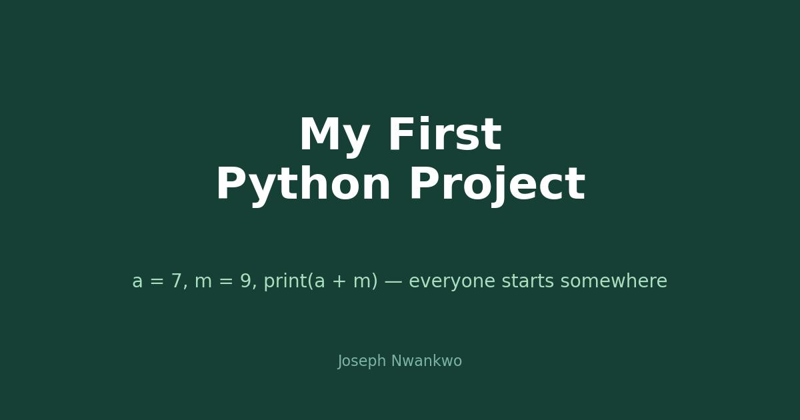

At a glance: Python · variables, arithmetic, output · the very beginning.
a = 7
m = 9
print(a + m) # 16
Why it is here.
Because honesty belongs in a portfolio. Between the machine learning models and the dashboards, there was a day when Python was brand new and adding two numbers felt like a win. Keeping this project public is a reminder of how far consistent practice goes.
Every expert was once a beginner. The difference is just not stopping.
Where it led.
From these three lines to pandas dataframes, scikit-learn pipelines, and 10,000-row analyses. The through-line is the same: curiosity, plus code.